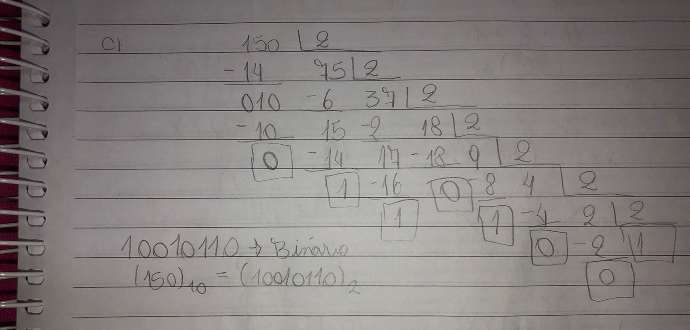

De forma simplificada podemos dizer que um Sistema de Numeração é uma forma de organizar e representar uma certa quantidade de números, a diferença de um sistema para o outro são as suas bases. Existem vários tipos de sistemas, os mais comuns em informática são:
O sistema decimal é o mais conhecido e o mais simples entre os outros sistemas. Ele é formado pela base 10, ou
seja, utiliza utiliza dez síbolos para representar todos os números (0,1,2,3,4,5,6,7,8,9).
Veja a
decomposição de um número decimal:
7.365 = 7000 + 300 + 60 + 5 = 7 . 10 3 + 3 . 10 2 + 6 . 10 1 + 5 . 10 0
O sistema binário tem que se ter um pouco mais de atenção na hora de fazer os cálculos, porque assim como o
próprio nome já diz ele, é representado por apenas dois símbolos 0 e 1 e é de base 2. Por isso quando se tem um
número maior requer um pouco mais de atenção na hora de fazer os cálculos para não se confundir.
Mas não é difícil de se entender, esse sistema possiu uma "regrinha" assim como os decimais, após a repetição
dos
dez números os próximos devem ser arranjos do 1 com cada um dos 10 símbolos, então temos 10, 11, 12, 13, ...,
depois o 2 com todos os 10 símbolos ..., depois o 3, assim por diante.
Para os binários segue a mesma lógica: usados o 0 e 1, o próximo será o arranjo 10, depois 11, depois 100, 101,
110, 111, etc.
Relação entre o sistema Decimal e o Binário

Notação: (18)10 = (10010)2
Existem duas forma de fazer está conversão, divisão sucessiva por 2, ou decomposição do número na base 2.
Eu achei a conversão por divisão sucessiva por 2 mais fácil, então irei esplicar essa.
É bem simples e sem mistério.
Exemplo:
 As operações de adição e subtração de Binários seguem as mesmas regras usadas nos Decimais.
Nessa parte do contúdo senti um pouco mais de dificuldade na subtração de números binários, mas depois que
entende o ráciocinio lógico fica mais fácil.
Regras da Adição
Regras da Subtração
Exemplo de Subtração:
O sistema octal é um sistema de numeração de base 8, ou seja, recorre a 8 símbolos (0,1,2,3,4,5,6,7) para a representação de um determinado valor. Quando os 8 símbolos são todos usados, 0, 1, 2, 3, 4, 5, 6, 7, os próximos devem ser arranjos do 1 com cada um dos 8 símbolos, então temos 10, 11, 12, 13, 14, 15, 16, 17, daí muda para os arranjos com 2, e assim por diante, mesma lógica que os binários.